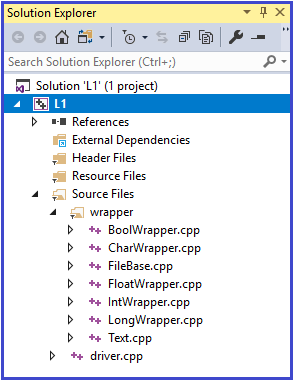
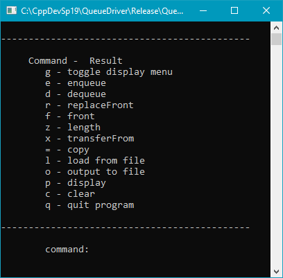

A Static Array of Queues
| < > |
< "CSSE437"> |
<"CSSE230","CSSE477"> |
<"CSSE376","CSSE333"> |
<"CSSE220"> |
1. Command Interpreter Using an Array
Make a command interpreter that works with an array of Queues instead of
just two Queues. This permits the user at the keyboard to work with more than two
Queues, and it actually reduces the amount of code in our command interpreter.
Setup Steps:
- Follow the VS2019 instructions for creating a new Visual Studio Console Project, name the project L1 and make it subordinate to the CppDevSp20 folder
- Copy (don't move) the driver.cpp from the CppDevSp20/QueueDriver folder to the newly created
L1 folder (VS created the L1 in Step 1)
- Follow the VS2019 instructions for adding .cpp files to your project's Source Files folder. First add the driver.cpp (that you copied) to the project's Source Files folder, then add the wrapper folder (VS calls it a filter) and its subordinate .cpp files. When finished with this step, your project should look like the screen shot to the right.
- Follow the VS2019 instructions for changing the project settings
- Follow the VS2019 instructions for building a project. If all steps up to this point were done correctly, it should build without any errors
- Follow the VS2019 instructions for changing to Release configuration
- Build again
- To run this program click: Debug | Start Debugging from the menu bar in Visual Studio
|
 |
Overview of What To Do:
- The driver.cpp that you copied from the QueueDriver folder is a client program of the Queue1 component
- Both client program and Queue1 component follow the Design by Contract approach where the client program is responsible for making sure that the precondition (requires clause) for the called operation (from the Queue component) is satisfied prior to making a call. Also, the Queue component's exported operations do not check to make sure that client as called correctly, they are implemented with the assumption that the client has called with all preconditions satisfied.
- The client program in driver.cpp works with two queues, q1 and q2
- Your job is to modify each of the driver.cpp operations that currently work with q1 and q2 so that after modification it works with one variable which is an array of queues instead of two distinct queue variables
To Do Specifics:
- Start at the top of driver.cpp with the "#include"s and the typedefs to create an array of Queue's - see Example 2.1 (below)
- Then move on to main - see Example 2.2
- Then change all operations that end up being called by main, e.g., the commandController, the do operations, the file input and output operations, etc. - see Example 2.3
- Also, you must modify getIndex - see Example 2.4
2. Code Examples
2.1 - Creating a StaticArray of Queues of Integers
Use the following example as a guide to creating an Array of Queues
Release Configuration Version |
Debug Configuration Version |
// Array of Queue <Integer>
// Date: 3/19
#include "Queue/Queue1.hpp"
#include "StaticArray/StaticArray1.hpp"
enum {lowerBound = 0, upperBound = 4, arraySize = 5};
typedef Queue1 <Integer> IntQueue;
//Create a class called QueueArray, which is indexed from 0..4
typedef StaticArray1 <IntQueue, lowerBound, upperBound>
IntQueueArray; |
// Array of Queue <Integer>
// Date: 3/19
#include "Queue/Queue1.hpp"
#include "Queue/QueueChecking.hpp"
#include "StaticArray/StaticArray1.hpp"
#include "StaticArray/StaticArrayChecking.hpp"
enum {lowerBound = 0, upperBound = 4, arraySize = 5};
typedef QueueChecking1<Queue1, Integer> IntQueue;
//Create checked QueueArray, which is indexed from 0..4
typedef StaticArrayChecking1<StaticArray1, IntQueue, lowerBound, upperBound>
IntQueueArray; |
2.2 - Changes to main - the main below is done, use it to replace the one in driver.cpp
int main (int argc, char*
argv[])
{
Boolean showMenu = (argc == 1);
ArrayOfQueues aQ1;
commandController (aQ1, showMenu);
wcout << "end program" << endl;
return 0;
} // end main |
2.3 - Changes to do operations - the doEnqueue below is done, use it and then modify all other do operations similarly
void doEnqueue(ArrayOfQueues& aQ)
{
Integer index;
Text x;
wcout << "Enqueue onto ";
index = getIndex(aQ);
getText(x);
aQ[index].enqueue(x);
wcout << endl << "q" << index << ".enqueue(x); executed." << endl;
wcout << "x = " << x << endl;
} // doEnqueue |
2.4 - Changes to getIndex operation
Change getIndex so that it lets the user type in a
number that can legally index into the ArrayOfQueues, but not allow indices
outside the bounds of the array
- Change getIndex's header to so that it takes the array of queues as a parameter - you can see a legal call to getIndex in the doEnqueue example above
- In getIndex use StaticArray's getBounds operation to determine the number of
locations in the array
Integer lowerB, upperB;
aQ.getBounds (lowerB, upperB);
// use lowerB and upperB to tell the user what the bounds
are
// and to check to make sure the user supplied a good index
3. Testing
After a successful build, run your program by clicking Debug | Start Debugging from the menu bar in Visual Studio. This will bring up a window similar to the one to the right
You can test the program three different ways:
- Run the program and type in commands at the command prompt to exercise each of the operations that were modified
- In the folder CppDevSp20/QueueDriver there is a sub-folder called TestScripts which contains .txt files. Each .txt contains a sequence of command interpreter commands for the original QueueDriver implementation that uses only two queues. If you utilize these test scripts, you'll need to first study them to understand what they are asking the command interpreter to do, and then modify them slightly to work with your command interpreter that uses an array of queues. Instead of running and retyping commands, you can run your command interpreter and then copy and paste modified tests scripts into your command interpreter while its running.
- Once you have your own set of .txt test scripts, you can place them in either the L1/Debug folder or the L1/Release folder and run the command interpreter from a command prompt and use file redirection to feed your test scripts into your .exe. See the Testing - With a Test Script reference page.
|
 |
4. Grading
Download from this Moodle assignment the L1Sol.zip file which contains L1Sol.exe. L1Sol.exe is a completed working version of the L1 assignment
I will be grading you submission by running various test scripts against your L1.exe and then using FC (a File Compare tool) to compare the output from your .exe against the output from L1Sol.exe
It's highly recommend that you do not try to use the eyeball method compare your L1.exe's output with the output from L1Sol.exe because FC detects all character differences, even whitespace differences
See the Grading Rubric associated with the L1 Moodle assignment
5. Submitting the Assignment for Grading
Upload your L1 driver.cpp file to the L1 Moodle assignment